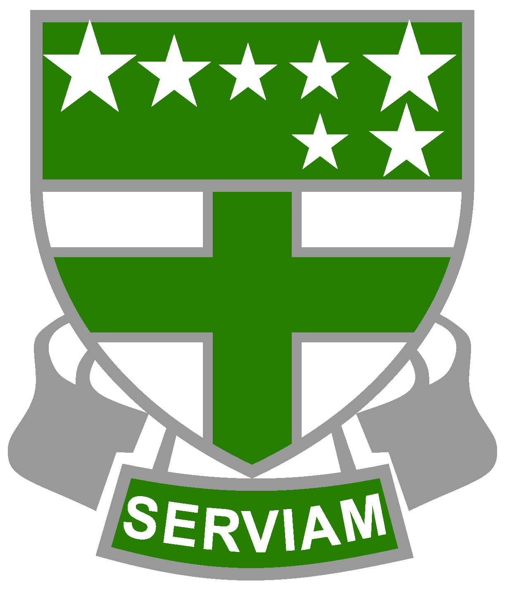

Chi,Zhang Xenia
1999 (18) Hualien City,Taiwan
zxcv2318567@gmail.com
7/30 is my birthday. At 19 years this year, I like to eat, dance, exercise, and walk. My personality is lively and I like to interact with everyone. The favorite idol is BTS. Their team spirit is what I want to learn. I have been to Japan, Hong Kong, South Korea, mainland China and other countries. The process of travel has taught me a lot. If I have the opportunity, you can go out and play with me!
我是7/30獅子座的女生，個性開朗，喜歡嘗試新的事物，對於高的地方很有憧憬，最大的夢想就是可以從飛機上跳傘俯瞰風景，沒什麼特別擅長的特點，屬於各類平平的類型，但如果有機會還是想要多方面都嘗試。
Experience
Xenia Experience Timeline
highschool - university
-

Step One
SMHS 私立海星中學
位於花蓮縣，我的國中高中都在這裡度過，學校環境很大又很舒服。
-
Step Two
SHU ICS 世新大學
參加 系上籃球隊 擔任中鋒。和系上同學和學姊們一起練習增加對籃球的技術
-
Step Three ：活動
國、高中
舉辦街頭表演募款、街頭募發票、偏鄉小學教育活動、中日海星交流會、接待國際姊妹校